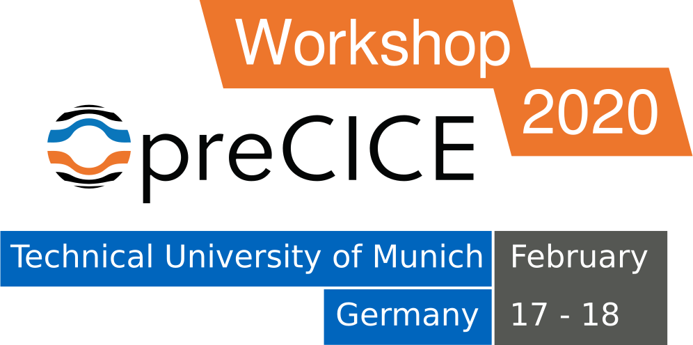

Thank you everybody who helped or participated in the workshop. After all the positive feedback, we are confident to repeat the workshop in 2021. Some of the feedback:
- Fantastic organisation throughout. Great efforts. Loved to meet people in different fields and also in similar fields.
- Thanks for the great workshop in the true sense of this word!
- All in all nice workshop!

February 17-18, 2020 at the Technical University of Munich, Department of Informatics (campus Garching), Lecture Hall 2. Registeration closed.
After meeting you at invited sessions in conferences around Europe, it is time that we meet at home, where everything started.
In the two (core) days of the Workshop, we plan to have talks by users and developers of preCICE, presenting challenging applications, latest features, as well as the foundations.
Program
The main part of the workshop stretches between Monday noon to Tuesday noon. However, we also plan additional events directly before and after the conference.
Sunday, February 16
If you are in Munich the day before, join us for a social event on Sunday:
- 14:00 - 16:00 Guided city tour in Munich
- 16:00 - 18:00 Experience Munich on your own
- 18:30 - 19:00 Quick tour through Neuhausen
- 19:00 - 22:00 Dinner at Großwirt
More details have been sent to registered participants.
Monday, February 17
- 09:00 - 11:45 Hands-on introductory workshop (Room: 02.07.023)
- 10:30 - 11:00: Coffee break (Magistrale)
- 11:30 - 12:00 Registration (Magistrale)
- 12:00 - 13:00 Lunch (Magistrale)
- 13:00 - 13:15 Opening
- 13:15 - 14:00 Introduction Blitz
- 14:00 - 15:00 Keynote: Claus-Dieter Munz: Numerical Approaches for the Sharp Resolution of Interfaces
- 15:00 - 15:30 Frédéric Simonis: preCICE v2.0 and beyond
- 15:30 - 16:30 Coffee Break
- 16:30 - 17:00 Alexander Jaust: Coupling fluid flows with DuMuX
- 17:00 - 17:30 Alban Rousset: 6-way coupling of DEM+CFD+FEM with preCICE
- 17:30 - 18:00 Kaspars Dadzis: Crystal growth as a challenge for multi-physics coupling
- 18:00 - 18:30 Amin Totounferoush: Two-Level parallel initialization in preCICE
- 19:30 - 22:30 Dinner at the Garchinger Augustiner
Tuesday, February 18
- 09:00 - 09:30 Jessica Mariño: An efficient way to build preCICE adapters and improve FSI simulations
- 09:30 - 10:00 Nitish Arya: Volume Coupling using preCICE for an AeroAcoustic simulation
- 10:00 - 10:30 Benjamin Rüth: High-order and multi-rate time stepping with preCICE
- 10:30 - 11:00 Coffee Break
- 11:00 - 12:30 preCICE World Café (Magistrale)
- 12:30 - 13:30 Lunch
- 13:30 - 18:00 Hands-on user support (Room: 02.07.023)
Wednesday, February 19
- 9:00 - 18:00 Hands-on user support (Room: 02.07.023)
Program details
Hands-on introductory workshop
Instructors: Gerasimos Chourdakis, Benjamin Uekermann
Affiliation: Technical Univerisy of Munich, Eindhoven University of Technology, preCICE developers.
A hands-on introduction to preCICE, recommended for new users that want to learn how to couple their own codes.
We will couple two simple Python codes, discussing the basic methods of the preCICE API and the structure of the configuration file. We will then also look into tools useful for developing and debugging coupled simulations.
Please bring your own laptop, with preCICE v2, Python 3.6 or newer, and the Python bindings installed. Optionally, please also install ParaView and gnuplot, or similar software to visualize VTK point data and CSV files. A VM image for VirtualBox will also be available.
Introduction Blitz
Introduce yourself in 1 slide and 1 minute per person.
Keynote: Claus-Dieter Munz: Numerical Approaches for the Sharp Resolution of Interfaces
Authors: Claus-Dieter Munz
Affiliation: University of Stuttgart
The need of heterogeneous coupling often appears in the simulation of complex technical problems. One may differ the problems with regions of different physical behavior, such as e.g. fluid structure interaction, or problems with regions of different mathematical or numerical modelling. The first class of problems is mainly motivated by the physical situation. Different physical processes occur in different parts and interact. The coupling here is usually imposed by an exchange of the boundary values for the different physical models. The other class is motivated by the quest to computational efficiency and consists of problems, in which the occurrence of different sub regions is more or less artificially introduced to save computational effort. An example here is the change of the flow equations to linear wave propagation equations to calculate the noise propagation to the outer field. Problems with use of different grids to handle the complexity of the geometry are as well divided into this group. In this talk, I will show different examples with focus to the sharp interface approximation and the coupling. These include aeroacoustic problems with noise generation and propagation, the zonal approach for turbulent flow, partly based on modelling and highly resolved regions, fluid structure interaction and multiphase flow.
Frédéric Simonis: preCICE v2.0 and beyond
Speaker: Frédéric Simonis
Affiliation: Technical University of Munich, preCICE developer
preCICE 2.0 brings many changes and improvements at the price of breaking backwards compatibility. This talk presents an overview on what has changed in this major release and presents a comprehensive guide on how to painlessly upgrade adapters and configurations. Furthermore, we will have a brief overview of upcoming features.
Alexander Jaust: Coupling fluid flows with DuMuX
Authors: Alexander Jaust, Kilian Weishaupt, Miriam Mehl, Bernd Flemisch
Affiliation: University of Stuttgart
Many porous media applications involve multiphysics systems that can be separated by a sharp interface, for example coupling porous-media flow and free flow. The solver DuMuX (DUNE for Multi-{Phase, Component, Scale, Physics, ...} [1]) is a C++-based open-source software that is used extensively for solving flow and transport processes in porous media.
This talk will focus on a new preCICE adapter that allows to couple DuMuX with DuMuX or other solvers aiming to be applicable to a wide variety of porous media applications. In the talk we discuss the development, the adapter's current capabilities, and we give a short overview on how to use the adapter, especially in the context of coupling porous-media flow and free flow. We will conclude with the discussion of future plans and possible extensions of the adapter.
[1] https://dumux.org/
Alban Rousset: 6-way coupling of DEM+CFD+FEM with preCICE
Authors: Xavier Besseron, Alban Rousset, Alice Peyraut, Bernhard Peters
Affiliation: University of Luxembourg
In this work, we present our preliminary results on the 6-way coupling of 3 numerical solvers: XDEM for the Discrete Element Method (DEM), OpenFOAM for Computation Fluid Dynamics (CFD), and deal.II for Finite Element Method (FEM). We relied on the existing preCICE adapters for OpenFOAM and deal.II and we have implemented a new preCICE adapter for the eXtended Discrete Element Method (XDEM), an innovative DEM software developed at the University of Luxembourg. The XDEM adapter permits coupling of the particulate phase of DEM with CFD and FEM: - DEM+FEM is a surface coupling that performs the exchange of surface forces and displacement between the particles and a deformable solid; - DEM+CFD is a volume coupling that performs the exchange of porosity, momentum, drag force and buoyancy between the particles and the fluid. Put together with the pre-existing CFD+FEM coupling, we obtain a 6-way coupled multi-physics solver for particles, fluid and deformable solids. We have tested and evaluated our multi-physics solver on the tutorial case “Cylinder with a flap” derived from the benchmarking case of Turek and Hron, that we extended to include a particulate phase solved by XDEM.
Kaspars Dadzis: Crystal growth as a challenge for multi-physics coupling
Authors: Kaspars Dadzis
Affiliation: Leibniz Institute for Crystal Growth, Berlin
Many technologically relevant crystalline materials are produced in complex high-temperature processes involving a large variety of physical phenomena such as heat transfer including radiation and phase change, electromagnetism, melt and gas flows, thermal stresses. Numerous specialized or general-purpose simulation tools (e.g., Comsol, OpenFOAM) have been applied to these processes, however, two key issues are still not solved. First, insufficient data for model validation due to limited possibilities of in-situ measurements. Second, incomplete knowledge about coupling effects between various physical phenomena and lack of appropriate models. We are addressing these issues within the framework of a Starting Grant from the European Research Council (ERC). An experimental platform will be developed for in-situ analysis of crystal growth processes of model materials with modern measurement techniques. The obtained data will be used to establish a new level of physical understanding and a new generation of multiphysical models for crystal growth. The present contribution discusses the practical challenges in this project with a focus on multi-physics coupling.
Amin Totounferoush: Two-Level parallel initialization in preCICE
Authors: Amin Totounferoush
Affiliation: University of Stuttgart, preCICE developer
We introduce a new parallel scheme for communication initialization in partitioned multi-physics simulations. The old solution to establish connections in preCICE is based on transferring the whole interface mesh from one solver to the other one. In this approach, the mesh partitions are gathered in a master rank of one solver and communicated to the master rank of the other solver. The receiving master rank broadcasts the whole mesh to the rest of the interface ranks. Each rank then compares its local mesh partition with the received mesh to find the connections and the list of the data that needs to be exchanged during run time. This approach introduces a communication bottleneck and, therefore, does not scale to higher numbers of cores. Furthermore, the storage of the complete mesh at the master ranks is very memory consuming.
To address these issues, we propose a two-level parallel approach. In the first level, instead of communicating the whole mesh via master ranks, we only communicate a bounding box for each interface mesh partition via the master-master communication channel. This information is enough to find the possible connections between ranks of the participants. In the second level, each rank communicates its mesh partition to the connected ranks for final filtering and finding the actual list of data that must be communicated during the simulation. Various test cases are studied and analyzed. The initial measurements show that the new initialization method outperforms the old one in terms of run time, scalability and memory consumption.
Jessica Mariño: An efficient way to build preCICE adapters and improve FSI simulations
Authors: Jessica Mariño, Elena Kolb, Michael Schäfer
Affiliation: Technical University of Darmstadt
Research at FNB focuses on the modeling and simulation of multiphysics phenomena, such as the interaction of multiphase flows with flexible structures and aeroacoustic effects induced by fluid-structure interaction (FSI). For some years, our research in the field of FSI was performed using an implicit partitioned method based on the in-house flow solver FASTEST, the structural solver FEAP, and the quasi-standard coupling interface MpCCI version 3.1.1. The method was intensively tested and optimized. However, the system memory issues with MpCCI 3.1.1 and the lack of information about the coupling process in the black-box MpCCI, motivated the change of the coupling software to preCICE. A first version of the FASTEST adapter, which was based on the old MpCCI implementation, led to limited functionality of preCICE. Our recent efforts, which included rebuilding the preCICE adapter almost from scratch and the change to the CalculiX structural solver, significantly improved the efficiency and accuracy of the coupling framework. The present work intends to share our experience on reusing/rebuilding existing coupling approaches, the accompanying validation processes and adapter maintenance.
Nitish Arya: Volume Coupling using preCICE for an AeroAcoustic simulation
Authors: Nitish Arya
Affiliation: Indian Institute of Technology
The present study uses preCICE to couple OpenFOAM and nektar++ for an aeroacoustic application. Initially, the mean velocity, density and pressure from a compressible solver in OpenFOAM are transferred to nektar++. These fields are then used as basefields over which the acoustic perturbations are calculated using APESolver in the nektar++ framework. The source terms from OpenFOAM are transferred at each time step. The computational domain in nektar++ is divided into two parts- the first part is the region where the acoustic equations are solved using the source terms from the flow solver and the second part corresponds to the free propagation region without any source terms. The source terms are exchanged within a volume where dominant acoustic sources are present. Large Eddy Simulation (LES) is employed for the flow solver while the acoustic solver uses Acoustic Perturbation Equations employing a Discontinuous Galerkin Method. The simulation is validated against the experimental results for flow over a cubic obstacle kept over a flat plate.
Benjamin Rüth: High-order and multi-rate time stepping with preCICE
Authors: Benjamin Rüth
Affiliation: Technical University of Munich, preCICE developer
Many multi-physics applications have solver components that come with their respective scale in time and space. The spatial mapping of preCICE already allows to consequently connect different scales in space, i.e. different mesh resolutions. However, for the time dimension, only a very limited subcycling scheme is implemented to support different scales in time and timestep sizes.
In this talk, we present a coupling scheme that utilizes waveform iteration and interpolates between time steps of each component to reach high order in time. We present a draft for the future implementation in preCICE and give usage examples. Finally, we want to discuss possible effects on the preCICE API and configuration.
preCICE World Café
Speak up! Join our World Café to discover and give us feedback on various aspects of preCICE.
The concept will be described in the beginning of the session.
Hands-on user support
Discourse and Gitter help us a lot everyday, but there is nothing like sitting together and discussing a problem. Join us on Tuesday evening and Wednesday in the room 02.07.023 and show us your own projects and open issues with preCICE.
There will be a list where you can add your name and topic during the workshop. However, it would help us if you sent us a description beforehand.
Registration
This is an academic, non-profit conference. However, we still have to collect a small registration fee.
For early registrations (until November 29), the registration fee is 100€, which covers the catering and the workshop dinner. A later registration (until February 7) is also possible, with a registration fee of 150€.
The registration has closed.
Getting there
The TUM campus Garching is well connected to the Munich airport (MUC), as well as to the city center and central train & bus stations. You can reach it using the subway line U6 (station Garching-Forschungszentrum). Have a look at the Directions page of TUM for more.
We would be very happy if you could choose a train or other environmentally-friendly ways to come to Munich. Please avoid flying if possible.
Accommodation
We have reserved a limited number of single rooms for you at the hotel Hoyacker Hof for the price of 82€ per night, including breakfast. We recommend this offer, as this very good, bavarian-style hotel is very close to the workshop venue and to the restaurant where we will host the invited dinner. It is also very well connected to the city center.
Please use the code preCICE when booking. The offer is available until January 7.
Funding and travel grants
This is a no-profit, academic conference. A big “thank you” to SPPEXA for the financial support of the Workshop!
Oh no, you just missed the travel grant application deadline!
With this support, we are able to provide a small number of travel grants to (PhD) students who would not be able to join otherwise. If this applies to you, please explain your situation in the registration form.
Call for contributions
Oh no, you just missed the call for contributions deadline!
We are aiming for 8-12 contributed talks of 15-25min each, focused more on coupling / preCICE-specific aspects and less on the scientific background of applications. We will notify you about acceptance until December 15.
Please note that this is not a classical scientific conference, but a user and developer meeting. Contributions are very welcome, if they fit the purpose, but not mandatory.
Possible contributions include (non-exclusively):
- New adapters for community codes
- Coupling numerics
- Comparison of different mapping, coupling, and communication methods
- Coupling boundary conditions
- Multi-scale coupling
- Building, packaging, testing, documentation and other Research Software Engineering topics
The registration has closed.
Important dates
- November 29: End of early registration, abstract submission deadline, travel grant application deadline. (extended from previously November 15)
- December 15: Notification of acceptance, detailed schedule published.
- February 7: Registration deadline.
- February 17-18: Main part of the workshop.